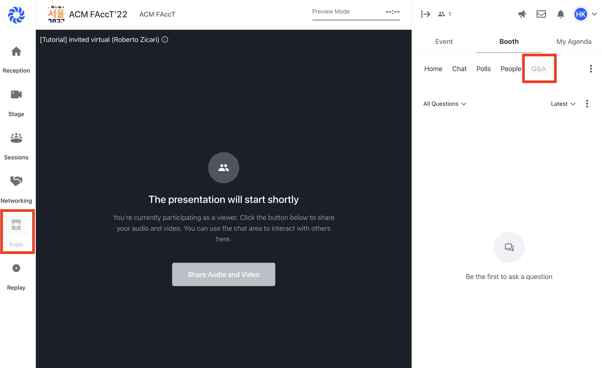

Session Chair Information
Contents
Session Chair Information#
As Session Chairs, you will be responsible for facilitating the live Q&A section of the session. Below are some recommendations for how to hold that role and what to do before, during and after the session.
Before the live Q&A#
Watch the pre-recorded presentations for your session panel ahead of time so you are more familiar with the content.
Have more questions drafted for the presenters than you need. Try to sprinkle equal amounts of questions geared to each one. That way you’ll be sure to give each panelist an equitable chance to speak.
Consider thematic and topical ties between presenters to help draw a throughline between the presentations.
Review pre-submitted questions at each paper’s booth on Hopin. 
Share the relevant pre-submitted questions with the presenters ahead of time so they can prepare answers earlier.
Let your assigned volunteer and authors know how you’d like to work together. Some key decisions to make
who will accept/reject the questions in Hopin?
who will mark questions answered?
Right before going live#
discuss beforehand with everyone (including tech support) which kinds of questions you want to answer privately (e.g. tech issues)
During the live Q&A#
Prompt a Panelist#
When the question is for any of the presenters, restate the question and then direct the question to a panelist who:
Is signaling to you
You feel would best answer it
Has not responded as much
Distribute questions thoughtfully#
Keep track of who you’ve asked questions to as the panel progresses. Make sure that there is an equitable distribution across authors from each paper.
Pulling from audience questions via Hopin#
Participants can upvote questions use this information at your discretion, but it can be helpful when there are a lot of questions.
You don’t need to read each question verbatim. In some cases attendees may ask multiple versions of the same question. Combine relevant and similar questions into one question, while still ensuring it’s simple enough to answer.
Ask audience questions if whatever order you feel makes sense. Omit questions when necessary.
Manage time effectively#
Always start on time and finish on time. Sounds easy, but with a tight schedule and talkative presenters, this can be quite a challenge.
Tell the presenters how much time (approximately) they have before the discussion starts. Let them know that you’re going to interrupt them if they’re running behind.
Maintain a healthy and friendly neutrality as a moderator#
Try not to interject too much with your own opinions. It’s important to move the conversation forward without agreeing or disagreeing with panelists. Your role is meant to be fairly neutral, unless of course something very inaccurate or offensive has been said that may need to be corrected on the spot.
To build energy and foster learning, encourage presenters to ask each other questions.
Don’t be afraid to cut presenters off#
Presenters can easily get too absorbed in the conversation and hog the microphone. In that case, you must tactfully cut them off in order to keep the discussion moving.
Repeat the question#
Repeat, restate or summarize the question for the entire audience to hear and for it to be picked up on any recordings being made. Reframe tangential questions to be more on topic.
Conclude the discussion with a brisk question#
When the time of your Q&A is almost up, make sure that you close the discussion meaningfully. Pose a final, concluding question and invite the presenters to answer it in turn.
Following the live Q&A#
Direct attendees to continue the conversation#
Each paper has a booth direct participants to continue the conversation there and remind authors they may join as well or share additional resources on chats or Q&A.